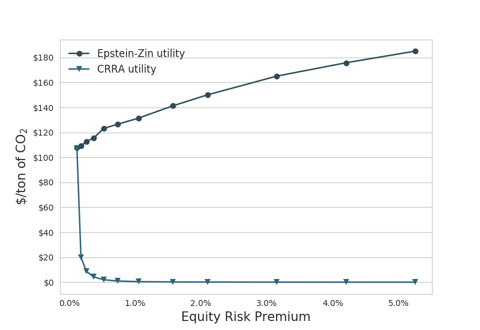

4 AI in Climate Research
Irrgang Abstract
Earth system models (ESMs) are our main tools for quantifying the physical state of the Earth and predicting how it might change in the future under ongoing anthropogenic forcing. In recent years, however, artificial intelligence (AI) methods have been increasingly used to augment or even replace classical ESM tasks, raising hopes that AI could solve some of the grand challenges of climate science. In this Perspective we survey the recent achievements and limitations of both process-based models and AI in Earth system and climate research, and propose a methodological transformation in which deep neural networks and ESMs are dismantled as individual approaches and reassembled as learning, self-validating and interpretable ESM–network hybrids. Following this path, we coin the term neural Earth system modelling. We examine the concurrent potential and pitfalls of neural Earth system modelling and discuss the open question of whether AI can bolster ESMs or even ultimately render them obsolete.
CarbonBrief
A new line of climate research is emerging that aims to complement and extend the use of observations and climate models. We propose an approach whereby machine learning and climate models are not used as individual tools, but rather as connected “hybrids” that are capable of adaptive evolution and self-validation, while still being able to be interpreted by humans.
Climate models have seen continuous improvement over recent decades. The most recent developments have seen the incorporation of biogeochemical cycles – the transfer of chemicals between living things and their environment – and how they interact with the climate system. Adding in new processes and greater detail have resulted in more sophisticated simulations of the Earth’s climate, it comes at the cost of increasingly large and complex models.
ESMs are built on equations that represent the processes and interactions that drive the Earth’s climate. Some of these processes can be described by fundamental laws – such as the Navier-Stokes equations of fluid motion, which capture the speed, pressure, temperature and density of the gases in the atmosphere and the water in the ocean. However, others – such as physiological processes governing the vegetation that covers vast parts of the land surface – cannot and instead require approximations based on observations.
These approximations – as well as other limitations that stem from the sheer complexity of the Earth system – introduce uncertainties into the model’s representation of the climate.
As a result, despite the tremendous success of ESMs, some limitations remain – such as how well models capture the severity and frequency of extreme events, and abrupt changes and “tipping points”.
In contrast to ESMs, machine learning does not require prior knowledge about the governing laws and relations within a problem. The respective relations are derived entirely from the data used during an automated learning process. This flexible and powerful concept can be expanded to almost any level of complexity.
The availability of observed climate data and model simulations in combination with ready-to-use machine learning tools – such as TensorFlow and Keras – have led to an explosion of machine learning studies in Earth and climate sciences. These have explored how machine learning can be applied to enhance or even replace classical ESM tasks.
Despite wordings like “learning” and “artificial intelligence”, today’s machine learning applications in this field are far from intelligent and lack actual process knowledge. More accurately, they are highly specialised algorithms that are trained to solve very specific problems solely based on the problem-related presented data.
Consequently, machine learning is often considered a black box that makes it hard to gather insights from. Similarly, it is often very difficult to validate machine learning in terms of physical consistency, even if their generated outputs may seem plausible.
Many of today’s machine learning applications for climate sciences are proof-of-concept studies that work in a simplified environment – for example, with a spatial resolution much lower than in state-of-the-art ESMs or with a reduced number of physical variables. Thus, it remains to be seen how well machine learning can be scaled up to operational and reliable usage.
Initially, machine learning in climate research was primarily used for automated analysis of patterns and relations in Earth observations. However, more recently, it has been increasingly targeted towards ESMs – for example, by taking over or correcting specific model components or by accelerating computationally demanding numerical simulations.
This development has led to the concept of “hybrids” of ESMs and machine learning, which aim to combine their respective methodological advantages while minimising their limitations. For instance, the hybrid concept has been explored for analysing continental hydrology.
Continuing this line of research will increasingly blend the so-far still strict line between process-based models and machine learning approaches.

Figure: Illustration of the stages of bringing ESMs and machine learning together towards neural Earth system modelling. The left and right branches visualise the current efforts and goals for building weakly coupled hybrids (blue and yellow), which converge towards strongly coupled hybrids.
Within machine learning, making a correct prediction for the wrong reasons can be termed taking a “shortcut”, or having a system description that is “underdetermined”. Taking shortcuts is increasingly likely within climate science because the data available to us from the observational record is short and biased towards recent decades.
4.1 Goal Index
In economic modelling choice of goal index (utility) function matters. Daniel 20181 presents this figure:

Fig. Optimal CO2-prices with increasing risk aversion for EZ vs CRRA utility specification. (From Daniel 2018)
As one of the co-authors explain: ‘We where not able to get the Social Cost of Carbon (SCC) under $120’. That is for ‘reasonable risk aversion’, using EZ-utilities. The ‘standard’ specification - with CRRA - utilities ends up with SCC of $20 or below.
\[V_1 = A [\tilde{C\_t}, \mu_t(V\_{t+1})]\]
Specification of the Goal Index function may seem a trivial technical issue - no so! There exists a broad professional litterature and profound discussions on this matter - which might de difficult to dis-entangle.
Let us begin with Frank Ramsey’s growth model from 1928, commonly known as the Ramsey-Cass-Koopmans model.
\(F(K,L)\) is an aggregate production function with factors \(K\) (Capital) and \(L\) (Labour).
4.2 Model Drift
Abstract Sausen
A method is proposed for removing the drift of coupled atmosphere-ocean models, which in the past has often hindered the application of coupled models in climate response and sensitivity experiments. The ocean-atmosphere flux fields exhibit inconsistencies when evaluated separately for the individual sub-systems in independent, uncoupled mode equilibrium climate computations. In order to balance these inconsistencies a constant ocean-atmosphere flux correction field is introduced in the boundary conditions coupling the two sub-systems together. The method ensures that the coupled model operates at the reference climate state for which the individual model subsystems were designed without affecting the dynamical response of the coupled system in climate variability experiments. The method is illustrated for a simple two component box model and an ocean general circulation model coupled to a two layer diagnostic atmospheric model.
Memo Barthel
The coupling of different climate sub-systems poses a number of technical problems. An obvious problem arising from the different time scales is the synchronization or matching of the numerical integration of subsys- tems characterized by widely differing time steps. A more subtle problem is
Model Drift When two general circulation models of the atmosphere and ocean are coupled together in a single model, it is generally found that the cou- pled system gradually drifts into a new climate equilibrium state which is far removed from the observed climate. The coupled model climate equilibrium may be so unrealistic (for example, with respect to sea ice extent, or the oceanic equa- torial current system) that climate response or sensitivity experiments relative to this state be- come meaningless. This occurs regularly even when the individual models have been carefully tested in detailed numerical experiments in the decoupled mode and have been shown to yield satisfactory simulations of the climate of the sepa- rate ocean or atmosphere sub-systems. The drift of the coupled model is clearly a sign that something is amiss with the models. Howev- er, we suggest that it is not necessary to wait with climate response and sensitivity experiments with coupled models unit all causes of model drift have been properly identified and removed. Model drift is, in fact, an extremely sensitive indi- cator of model imperfections. The fact that the equilibrium climate into which a coupled model drifts is unacceptably far removed from the real climate does not necessarily imply that the model dynamics are too unrealistic for the model to be applied for climate response and sensitivity ex- periments. One should therefore devise methods for separating the drift problem from the basically independent problem of determining the change of the simulated climate induced by a change in boundary conditions a n d / o r external forcing (cli- mate response), and from the question of the ef- fect of changes in the physical or numerical for- mulation of the model (model sensitivity).
Flux Correction The separation of the mean climate simulation from the climate response or sensitiv- ity problem can be achieved for coupled models rather simply by an alternative technique, the flux correction method. The errors that result in a drift of the coupled model are compensated in this method by con- stant correction terms in the flux expressions by which the separate sub-system models are cou- pled together. The correction terms have no in- fluence on the dynamics of the system in climate response or sensitivity experiments, but ensure that the “working point” of the model lies close to the climate state for which the individual models were originally tuned. The basic principle of the flux correction method is to couple the atmosphere and the ocean in such a manner that in the unperturbed case each sub- system simulates its own mean climate in the same manner as in the uncoupled mode, but re- sponds fully interactively to the other sub-system in climate response or sensitivity experiments.
Sausen (1988) Coupled Ocean-Atmosphere Model Drift Flux Correction (pdf)
4.3 Model-evaluation
GCMeval: a tool for climate model ensemble evaluation

The global climate models indicate quite a range of future outcomes in terms of precipitation and temperature. To account for that, regional scenarios need to use fairly large multi-model ensembles.
4.3.1 Measuering Forcings
Earth is on a budget – an energy budget. Our planet is constantly trying to balance the flow of energy in and out of Earth’s system. But human activities are throwing that off balance, causing our planet to warm in response.
Adding more components that absorb radiation – like greenhouse gases – or removing those that reflect it – like aerosols – throws off Earth’s energy balance, and causes more energy to be absorbed by Earth instead of escaping into space. This is called a radiative forcing, and it’s the dominant way human activities are affecting the climate.
limate modelling predicts that human activities are causing the release of greenhouse gases and aerosols that are affecting Earth’s energy budget. Now, a NASA study has confirmed these predictions with direct observations for the first time: radiative forcings are increasing due to human actions, affecting the planet’s energy balance and ultimately causing climate change. The paper was published online March 25, 2021, in the journal Geophysical Research Letters.
NASA’s Clouds and the Earth’s Radiant Energy System (CERES) project studies the flow of radiation at the top of Earth’s atmosphere. A series of CERES instruments have continuously flown on satellites since 1997. Each measures how much energy enters Earth’s system and how much leaves, giving the overall net change in radiation. That data, in combination with other data sources such as ocean heat measurements, shows that there’s an energy imbalance on our planet. But it doesn’t tell us what factors are causing changes in the energy balance.
This study used a new technique to parse out how much of the total energy change is caused by humans. The researchers calculated how much of the imbalance was caused by fluctuations in factors that are often naturally occurring, such as water vapor, clouds, temperature and surface albedo (essentially the brightness or reflectivity of Earth’s surface). The researchers calculated the energy change caused by each of these natural factors, then subtracted the values from the total. The portion leftover is the radiative forcing.
The team found that human activities have caused the radiative forcing on Earth to increase by about 0.5 Watts per square meter from 2003 to 2018. The increase is mostly from greenhouse gases emissions from things like power generation, transport and industrial manufacturing. Reduced reflective aerosols are also contributing to the imbalance.
See Links to references↩︎